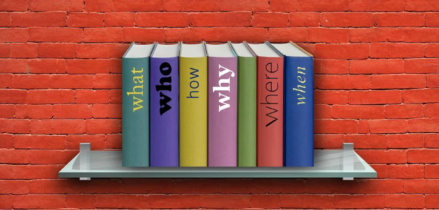

집중력의 종류 2가지 비교
반응성 집중력
반응성 집중력이란?
강한 자극에만 반응하여 조절과 균형의 기능을 잃어가는 수동적 집중력과 같은 맥락인 것 같다.
새로운 것, 강한 것, 자극적인 것을 접할 때 본능적으로 발생하는 집중력으로, 공부를 하거나 무엇을 관찰하거나 차근히 설명을 들어야 할 때에는 금방 힘들어 하고 집중하지 못하지만 게임이나 영상물 인터넷 등을 할때에 집중력을 발휘하는 것을 반응성 집중력이라고 한다.

✲느리고 약한 자극에는 반응하지 않는 '팝콘브레인'
초점성 집중력
초점성 집중력이란?
한 곳에 의식적으로 집중하는 집중력으로 반응성 집중력과 다르게 새롭거나 자극적이지 않아도 오랜 시간 능동적으로 집중할 수 있는 능동적 집중력을 말하며 오랜 시간 독서나 공부를 할 때 사용되는 집중력이라고 할 수 있다.
어떤 집중력을 키워야 하는가?
공부를 하고 지식을 쌓아가야 하는 현재 상황에서는 능동적 집중력인 초점성 집중력을 키워야 할 것이다.
초점성 집중력을 키우는 방법
초점성 집중력을 키우는 방법으로는 책을 많이 읽는 것이 있는데, 미디어에 비하여 자극이 적은 책을 집중해서 읽어 나가면 자극 없이 집중하는 능력인 초점성 집중력 향상에 큰 도움이 된다.

초점성 집중력의 장점
초점성 집중력의 가장 큰 장점은 자극이 없는 것에도 집중할 수 있다는 점이다. 보통 공부나 독서가 있는데, 자신의 분야에 관하여 책을 많이 읽고 공부를 하면 도움이 된다는 사실은 누구나 알지만 말처럼 쉽게 할 수 있는 일이 아닌데, 초점성 집중력은 이러한 자기개발에 도움이 된다.
✲초점성 집중력이 늘어나면 자기 분야의 지식을 쌓는데 도움이 된다
집중력에 대한 개인적인 생각
지금까지 공부에 집중하거나 게임에 집중하는 집중력을 따로 분류하지 않고 같은 집중력이라고 생각했었는데, 이번에 반응성 집중력과 초점성 집중력에 대하여 찾아보며 그 차이점을 알 수 있었고, 지식을 쌓아 나가야하는 직업 특성상 앞으로 초점성 집중력을 기르기 위하여 행동을 해야한다는 생각이 들었다.